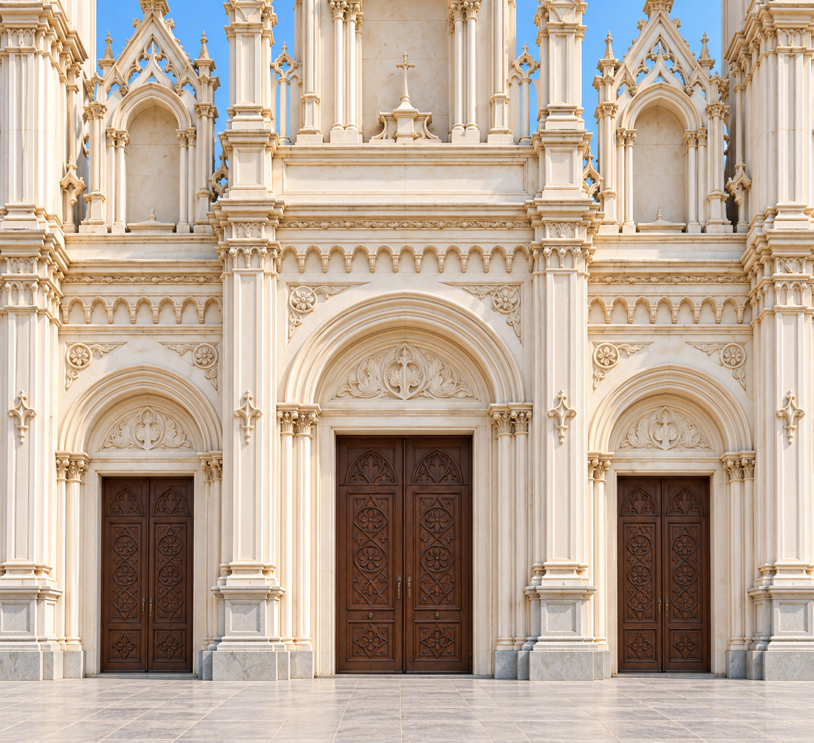
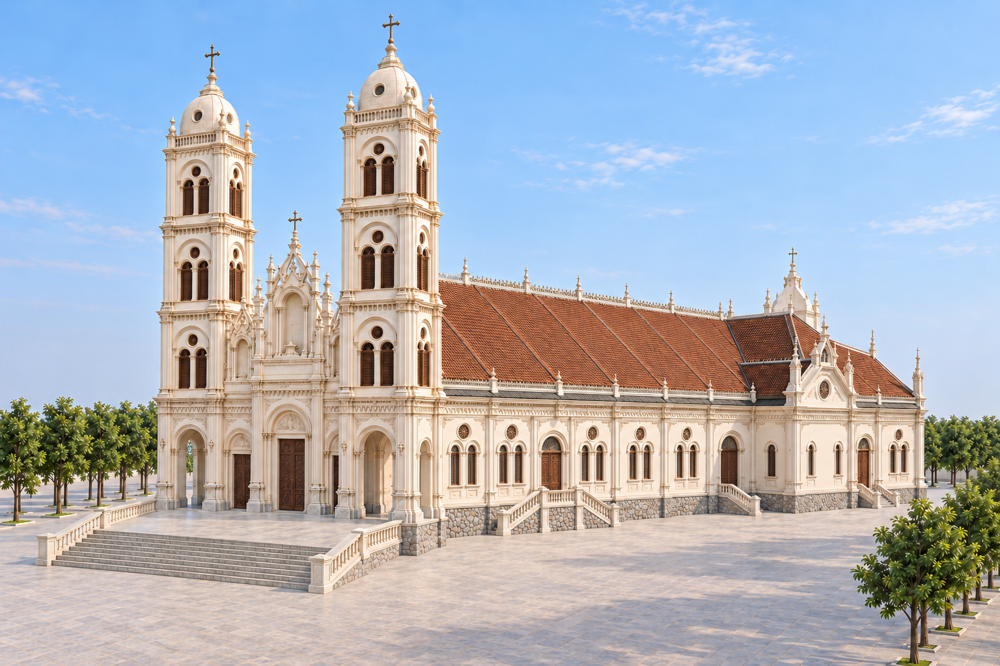
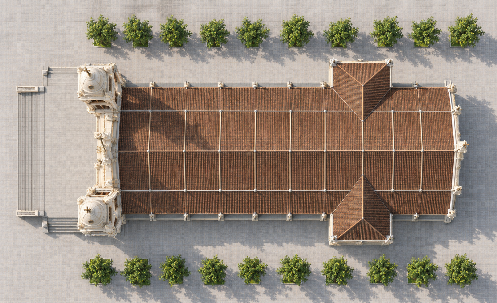
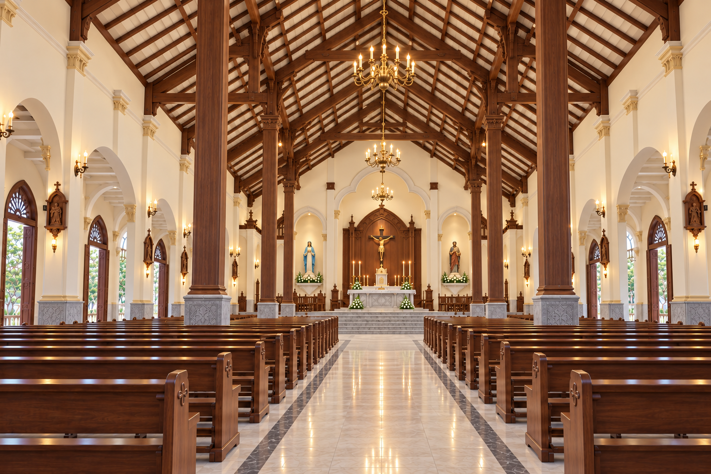
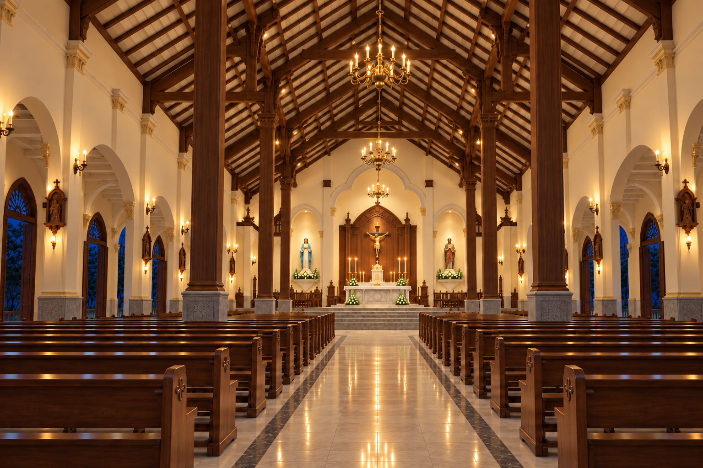

Reference checkpoint
Door details, exterior checks, interior studies and lighting. Seven new images, with the current front and earlier side-stair detail retained.
Selected reference set · Open the updated simulator to compare the shared model.

Main doors and carvings
Inspect the timber panels, arch mouldings, capitals, relief and niche bases. Click any image for full size.

Current front
Flat stage before the stairs, open tower arches and brown shutters.

Front corner in daylight
Check the stage, side-door sequence, along-wall stairs and projecting wing.

Roof footprint
Both wings at axes 9–10. Use the original plan for side-stair positions; this roof image does not reliably show every stair.

Rear elevation
Five narrow windows above the continuous stone base, with no rear stairs.

Side stair beside the door
The earlier close-up, preserved as requested.

Interior in daylight
Column rows, exposed timber roof, central aisle and sanctuary arch.

Exterior at night
Warm light on the towers, facade relief, door landings and steps.

Interior at night
The same nave under chandeliers, sconces and warm accent lights.